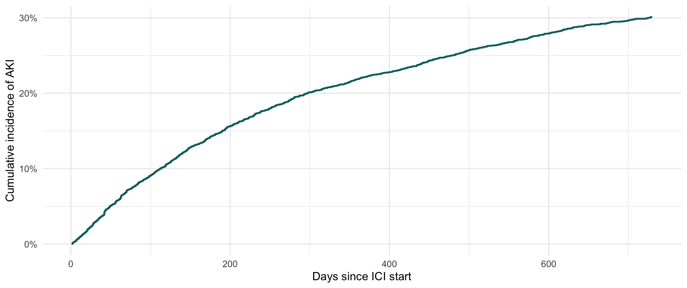
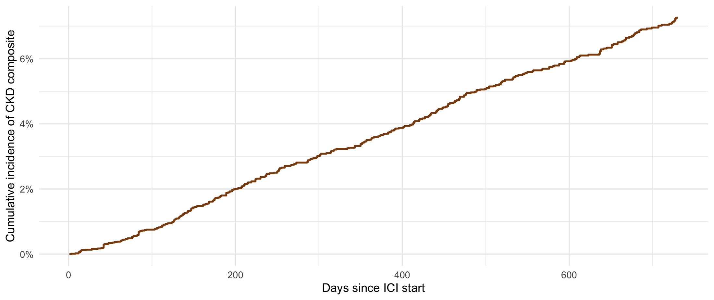

| step | n | removed |
|---|---|---|
| ICI-CKD analytic master (as saved) | 17721 | NA |
| - death recorded before ICI start | 17718 | 3 |
| - PPI on or before ICI (keep new-users) | 9081 | 8637 |
| - no creatinine after ICI (keep ascertainable) | 8911 | 170 |
PPI → AKI after ICI — Analysis
Time-varying Cox model, 730-day horizon
NoteAbout this page
Renders aggregate results only from cache/*.rds built by data_management.qmd. No patient-level row reaches the output; cells below 11 are suppressed. Follow-up horizon is 730 days.
The cohort is 8,911 new-user patients. 3,016 start a PPI during follow-up and 5,895 never do. There are 2,003 AKI events over 9,608.6 person-years; median follow-up is 359 days.
1 Cohort
How the 8,911 analytic cohort is reached:
Person-time and crude AKI rate by time-varying PPI state:
| exposure | person_years | aki_events | rate_per_100py |
|---|---|---|---|
| Not on PPI | 7464 | 1269 | 17.0 |
| On PPI (after initiation) | 2145 | 734 | 34.2 |
2 Table 1 — baseline characteristics
Baseline covariates for the whole cohort and by whether the patient starts a PPI during follow-up. PPI initiation is time-varying in the model; this split is descriptive only (it groups patients by an exposure that, for initiators, is acquired after baseline). Continuous variables are mean (SD); categorical are n (%).
| Characteristic | Overall N = 8,9111 |
Never PPI N = 5,8951 |
Started PPI N = 3,0161 |
|---|---|---|---|
| Age at ICI start, years | 63.7 (13.8) | 64.6 (13.9) | 61.9 (13.6) |
| Sex | |||
| Female | 4,287 (48%) | 2,789 (47%) | 1,498 (50%) |
| Male | 4,624 (52%) | 3,106 (53%) | 1,518 (50%) |
| Race | |||
| White | 7,900 (89%) | 5,226 (89%) | 2,674 (89%) |
| Black | 256 (2.9%) | 154 (2.6%) | 102 (3.4%) |
| Asian | 338 (3.8%) | 215 (3.6%) | 123 (4.1%) |
| Other/Unknown | 417 (4.7%) | 300 (5.1%) | 117 (3.9%) |
| Diabetes | 878 (9.9%) | 606 (10%) | 272 (9.0%) |
| Hypertension | 4,240 (48%) | 2,806 (48%) | 1,434 (48%) |
| Baseline eGFR, mL/min/1.73 m2 | 85.4 (21.1) | 84.5 (21.6) | 87.3 (20.0) |
| 1 Mean (SD); n (%) | |||
3 Time-varying Cox model
Every patient is unexposed at ICI start and becomes exposed only from the day they fill a PPI, so pre-PPI follow-up counts as unexposed person-time. The model is Surv(tstart, tstop, AKI) ~ PPI (+ covariates).
The PPI effect (On PPI vs Not on PPI), unadjusted and adjusted:
| Model | HR for AKI (95% CI) | p |
|---|---|---|
| Unadjusted | 2.88 (2.62-3.18) | <0.001 |
| Adjusted | 3.04 (2.76-3.35) | <0.001 |
Full adjusted model — every covariate:
| Characteristic | HR1 | 95% CI1 | p-value |
|---|---|---|---|
| PPI | |||
| Not on PPI | — | — | |
| On PPI | 3.04 | 2.76, 3.35 | <0.001 |
| Age at ICI start (per year) | 1.01 | 1.00, 1.01 | 0.006 |
| Sex | |||
| Female | — | — | |
| Male | 0.93 | 0.85, 1.02 | 0.13 |
| Race | |||
| White | — | — | |
| Black | 1.54 | 1.24, 1.93 | <0.001 |
| Asian | 1.44 | 1.16, 1.79 | 0.001 |
| Other/Unknown | 1.11 | 0.89, 1.38 | 0.3 |
| Diabetes | |||
| No | — | — | |
| Yes | 1.25 | 1.09, 1.43 | 0.001 |
| Hypertension | |||
| No | — | — | |
| Yes | 1.25 | 1.13, 1.37 | <0.001 |
| Baseline eGFR (per mL/min/1.73 m2) | 0.99 | 0.99, 1.00 | <0.001 |
| 1 HR = Hazard Ratio, CI = Confidence Interval | |||
Proportional-hazards check for the PPI term (cox.zph): p = <0.001.
4 Cumulative incidence of AKI
Cumulative incidence of AKI over two years for the whole cohort (death and end of creatinine follow-up treated as censoring).

5 CKD composite outcome (Kavita definition)
Second outcome, using the same CKD composite as the Kavita ICI-CKD project: ESRD / kidney transplant after ICI, sustained (>=90 day) eGFR < 10, incident CKD (baseline eGFR >= 60 with a sustained > 30% drop to eGFR < 60), or CKD progression (baseline eGFR < 60 sustained). Exposure and covariates are exactly as in the AKI model above; only the outcome and its follow-up clock change.
Components contributing to the composite (new-user cohort):
| component | n |
|---|---|
| Incident CKD (baseline eGFR>=60) | 460 |
| CKD progression (baseline eGFR<60) | 78 |
| Sustained eGFR < 10 | <11 |
| ESRD / kidney transplant after ICI | 47 |
| Any CKD composite | 568 |
Person-time and crude CKD rate by time-varying PPI state:
| exposure | person_years | ckd_events | rate_per_100py |
|---|---|---|---|
| Not on PPI | 7807 | 256 | 3.3 |
| On PPI (after initiation) | 2623 | 131 | 5.0 |
The PPI effect on CKD composite (On PPI vs Not on PPI), unadjusted and adjusted:
| Model | HR for CKD composite (95% CI) | p |
|---|---|---|
| Unadjusted | 1.48 (1.19-1.83) | <0.001 |
| Adjusted | 1.62 (1.30-2.01) | <0.001 |
Full adjusted model — every covariate:
| Characteristic | HR1 | 95% CI1 | p-value |
|---|---|---|---|
| PPI | |||
| Not on PPI | — | — | |
| On PPI | 1.62 | 1.30, 2.01 | <0.001 |
| Age at ICI start (per year) | 1.03 | 1.02, 1.04 | <0.001 |
| Sex | |||
| Female | — | — | |
| Male | 0.70 | 0.57, 0.86 | <0.001 |
| Race | |||
| White | — | — | |
| Black | 0.90 | 0.46, 1.75 | 0.8 |
| Asian | 0.71 | 0.34, 1.50 | 0.4 |
| Other/Unknown | 0.97 | 0.57, 1.66 | >0.9 |
| Diabetes | |||
| No | — | — | |
| Yes | 1.40 | 1.05, 1.88 | 0.024 |
| Hypertension | |||
| No | — | — | |
| Yes | 1.06 | 0.85, 1.32 | 0.6 |
| Baseline eGFR (per mL/min/1.73 m2) | 0.99 | 0.98, 0.99 | <0.001 |
| 1 HR = Hazard Ratio, CI = Confidence Interval | |||
Proportional-hazards check for the PPI term (cox.zph): p = 0.482.
Cumulative incidence of the CKD composite:

Built from cache/qc.rds created 2026-09-28 10:26. Aggregate results only; cells below 11 suppressed.